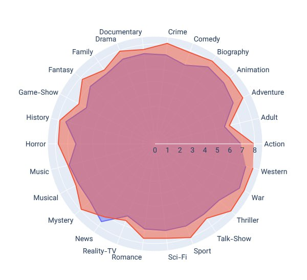
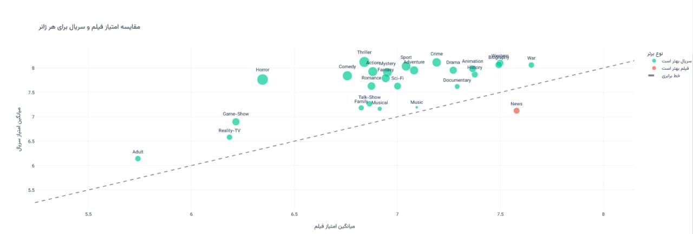
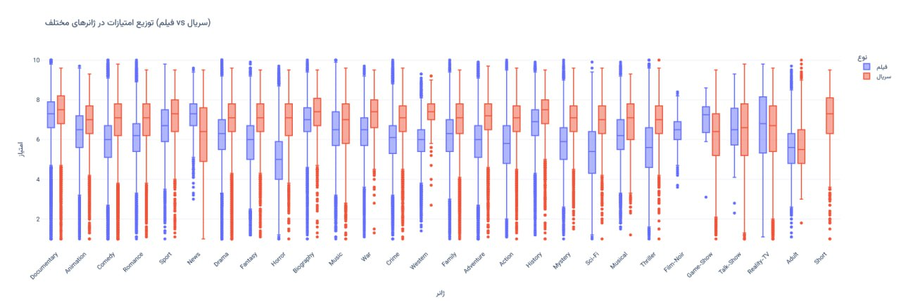
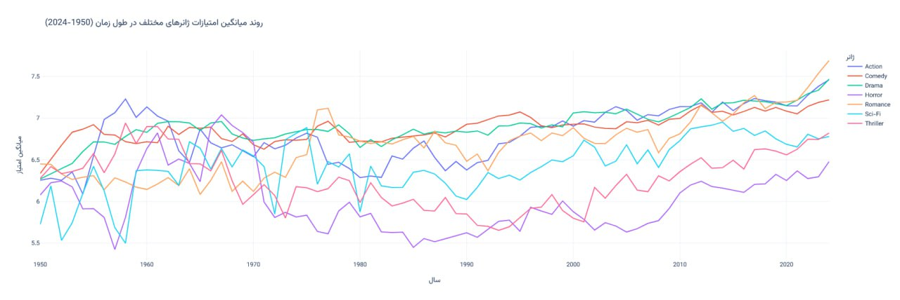

دیتاست عمومی IMDb رو برداشتم و رفتم سراغ یه سؤال ساده: میانگین امتیاز فیلمها و سریالها در ژانرهای مختلف چقدره؟ فایلهایی که استفاده کردم اینا بودن:
https://datasets.imdbws.com/title.episode.tsv.gz https://datasets.imdbws.com/title.ratings.tsv.gz
در نمودار زیر، رنگ قرمز سریالهاست و رنگ آبی که زیر نمودار قرمز قرار گرفته، فیلمها. یعنی تقریباً در هر ژانری، سریالها امتیاز بالاتری میگیرن.

نمودار قبلی رو میشه یه جور دیگه هم دید. محور افقی: میانگین امتیاز فیلمها در اون ژانر. محور عمودی: میانگین امتیاز سریالها در اون ژانر. همونطور که از نمودار قبلی هم مشخصه، ژانر News توی فیلمها میانگین امتیاز بالاتری داره.

میانگین بهتنهایی گولزنندهست، پس همین امتیازها رو از دید Box Plot هم نگاه کردم که ببینم میانه و پراکندگی در ژانرهای مختلف چه شکلیه:

و آخرین چیزی که برام جالب بود، روند میانگین امتیازها در طول زمان بود:

این کار را اول در کانال تلگرام گذاشتم؛ این نوشته همان است، کمی کاملتر.
nb.neighbours()
| title | date | |
|---|---|---|
| prev | سریالهایی که هر فصلشان بهتر تمام میشود | ۱۴۰۴/۰۱ |
| next | ارزانترین و گرانترین کالای دیجیکالا، هر ۱۲ ساعت | ۱۴۰۴/۰۲ |